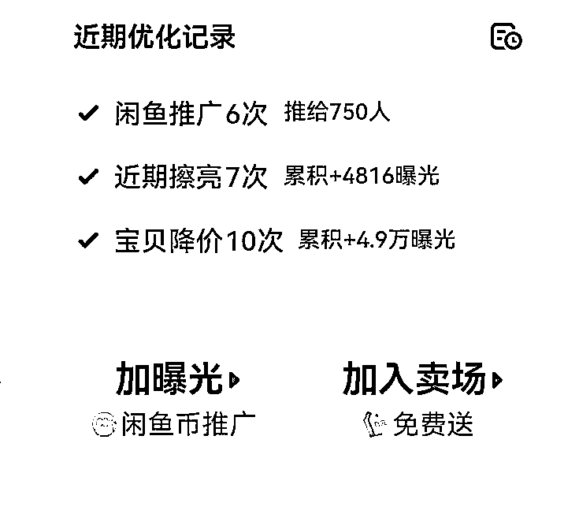

让我月入六位数的项目（ai写作私域变现）咸鱼渠道引流＋转化相关技巧分享
来源：https://lv9qj6hfr4z.feishu.cn/docx/IpX1dQ6DGow2WnxFe66cdM2Gnjb
AI写作变现是今年爆发式增长的一个赛道 近半年对该赛道感兴趣想入局的人比比皆是 大部分咨询我的人最担心的问题莫过于就是渠道＋引流了 今天让入局该项目已经四年变现总体超过60w＋的荷包蛋来给大家分享一下关于咸鱼获客的一些小技巧和初入局的新手小白们经常遇到的一些问题
咸鱼介绍
闲鱼作为一个二手交易平台，近年来越来越受到关注和使用。成功运营一个闲鱼账号不仅可以带来客观的收入，还可以积累一定的客户资源。以下是详细的闲鱼运营日常操作指南，涵盖从账号准备到具体操作的方方面面。
一、闲鱼运营的日常操作
- 账号准备与初期养号
- 创建账号：准备两个闲鱼账号，一个用于日常运营，另一个作为备用，防止主账号出现问题时无可替代。
- 账号包装：设置专业可信的头像，完善个人资料，包括昵称、所在地、个人简介等。简介要简洁明了，突出主营业务。
- 初期养号：新注册的账号需要养号，增加账号的真实性。通过在闲鱼上购买小商品，增强买家标签；每天参与闲鱼任务，保持账号活跃度。
- 对标账号与素材收集
- 搜索对标账号：在闲鱼搜索“撰写”“文章”等关键词，找到数据表现好的对标账号，观察其商品发布情况、文案、图片等，学习其成功之处。
- 素材收集：每天寻找至少5篇对标图片素材和文字素材，建立素材库，确保有源源不断的内容发布。
- 发布商品与内容优化
- 商品发布策略：每天发布1-3条闲鱼帖子，建议在一些流量较高的帖子下使用“卖同款”入口进行售卖，截取对方流量。每隔1-2小时发布一个商品，每天发布5个及以上商品，商品数量达到50个时优化商品，重新上架。
- 标题与描述：标题简洁明了，突出卖点；描述详细介绍商品特点和优势，避免使用敏感词汇，确保帖子不违规。
- 图片优化：商品图片清晰、吸引人，可适当添加高亮语句和手写批注，增加吸引力。
- 价格调整与曝光策略
- 价格调整：当帖子有曝光后，但浏览量和咨询量不多时，要果断降价。每天降价一次，多降价增加曝光量。
- 曝光策略：使用“超级曝光”、“急速卖”等功能提高曝光率。在中午12点、晚上8点等特定时间段进行降价，吸引更多用户关注。
- 私域转化与自动回复
- 私域转化：使用手册中的私域转化SOP，完成第一次私域转化，引导用户从闲鱼平台转移到微信等私域平台，建立长期联系。
- 自动回复设置：确保智能自动回复功能开启，通过关键词设置自动回复，引导用户完成下一步操作。
- 数据复盘与优化
- 数据监控：定期监控帖子数据，包括曝光量、浏览量、咨询量等，分析哪些帖子表现好，哪些需要优化。
- 内容优化：根据数据复盘结果，持续优化帖子内容和引流话术，学习对标账号的成功经验，改进运营策略。
- 引流话术优化：结合飞书的引流话术指导，优化并搭建自己的转化SOP，定期复盘引流转化数据，提高引流成功率。
二、闲鱼运营中的违规避坑
在闲鱼运营过程中，避免违规操作是至关重要的。违规不仅会影响账号的正常运营，还可能导致账号被限流或封号。以下是一些常见的违规行为及其避坑指南：
- 商品违规
- 虚拟商品：由于闲鱼是针对实物商品交易的平台，不提倡虚拟商品销售。即使规避了违禁词，也有可能被检测到违规。
- 操作技巧：避免频繁刷单，且刷单时要模拟真实用户操作；一个产品在同一时间段不要多次编辑擦亮；同一时间段发布多个商品时，要确保每个商品的内容和图片有所区别。
- 私聊违规
- 引流违规：引流违规是常见的，避免直接在私聊中提到“引流”相关字眼。
- 发送关键字：避免在聊天中使用敏感关键词，如“微信”、“转账”等，尽量通过模糊表达引导用户。
- 青睐客户的违规要求：客户有时会提出违规要求，如提到“代写”等，避免直接回复，可以询问具体需求，以此规避平台检测。
- 优化建议
- 避免正面回复：在面对可能涉及违规的问题时，不要正面回复，转而询问具体需求，确保安全。
- 频繁降价：降价不仅能增加商品的曝光量，还能吸引更多用户关注和咨询。
三、实际案例分析
从最基础的来讲你准备好准备好两个闲鱼号以后，可以参考一下几个步骤，进行操作
- 在闲鱼搜索（文章 撰写）等关键词词，然后找几个帖子数据不错的对标账号。
- 参考对标账号完成，完成账号包装，并且熟悉闲鱼常用功能。
- 了解闲鱼引流的课程体系，学习相应的引流话术。
- 使用手册的发布方法，每天至少发布 1 条闲鱼帖子(建议3-5条)。（小ts，建议在一些链接流量比较高的帖子下边，卖同款那个入口进行售卖，有截取他流量的可能）
- 每天寻找至少 5 篇对标图片素材和文字素材，持续补充素材库，确保有源源不断的内容发布。
- 帖子有曝光后，浏览增多，想要不多的时候，要果断降价！每天降价一次！多降价！
- 使用手册的私欲转化 SOP ，完成第一次私域转化，智能自动回复哪里记得打开！
- 持续复盘笔记、引流数据，优化帖子内容和引流话术、提高引流成功率。
- 复盘引流转化数据，结合飞书的引流话术指导优化并搭建自己的转化 SOP
四、初期遇到的问题汇总
1：闲鱼新号养号起不来：
新注册的账号，可以尝试先在闲鱼买东西，增强自己的买家标签，每天多做闲鱼的任务，增强账号的真实性。
然后前1-3天就每天上链接，例如家里的书，因为我们扫的是书后边的isbn码，所以上书完全不影响。上两本书试试账号的流量。
每天几百曝光的话，后几天可以按飞书的流程正常引流。
2：账号没有流量，发了差不多十个商品
那你先看看每个链接的曝光是多少，是否有曝光，是0还是个位数，如果曝光很少，那你就要考虑一下是否自己的帖子里有违禁词，帖子是否合格，一般一个链接的流量两天不过百就是垃圾链接可以下架处理。
还有就是一定要多做闲鱼任务，多降价，降价有助于流量的增加，每天降一次，新发布的链接可以定价稍微高一些，但也不要太高。
还有每天要观摩对标账号，看看他们的流量为什么那么好，学习一下，先抄后超。
3：发布方式看视频里有涉及二手书的发布方式，那需要出版物经营许可证嘛。
不需要，按照飞书教的两种发布流程即可。
4:个人觉得发布的时间也有讲究，我试过白天发效果差。
这个怎么说呢，其实什么时间段发都没有问题，如果认为晚上发好就晚上发，其实早中晚可以各发一个，这个没问题的，链接跑起来也需要时间。
5: 账号新老程度呢，还有就是账号以前发布过其他内容，有过成交的，是否有人群标签问题
老账号一般比新账号好一些，无违规账号一般比违规账号好一些，不存在人群标签问题，我们做的这个引流，大部分都是通过搜索流量来的，不是通过主页，所以人群这块不影响。
6:账号违规了 怎么办 有影响吗
有影响，一般违规就会限流，所以尽量别让账号违规，违规了就按要求安全中心哪里的要求恢复闲气值。
7: 不应该 不同的时间流量不一致么同一时间发很多 不会被系统判定垃圾贴嘛
我们这个接单的主要获得的就是搜索流量，同一时间发很多帖子，理论上不影响，但是前提希望你可以把帖子做的质量高点，我一般一个号一天发三个帖子，早中晚各一个。
8:闲鱼如何合理化运营获客：
链接多降价、多做闲鱼活动、头像有亲和力点，简介写的更专业点，发布的内容质量更好些，多点原创。
9:如何增强曝光
降价 推广 擦亮，这三点在我的宝贝那里表达的特别清楚。

综上所述就是闲鱼引流遇到的一些问题。